RT @AsahiLinux: Linux 5.19 is out, and Linus Torvalds released it from an M2 MacBook Air running the Asahi Linux kernel! 🎉
https://t.co/4f…
RT @marcan42: M2 keyboard/trackpad fully works! 🎉
That brings M2 kernel support up to feature parity with M1. Now just some installer and…
This is magic 🤯 Thanks @CrossrefOrg, @ORCID_Org, and @SciPyConf @dillonniederhut!
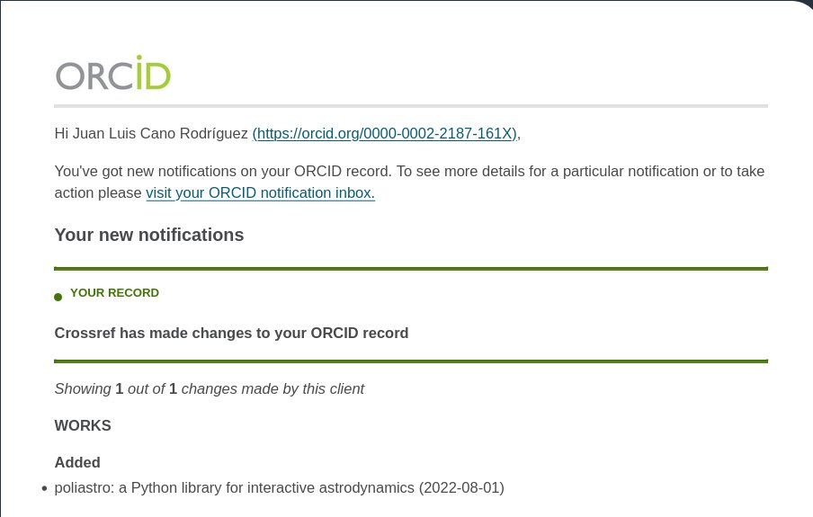
Replying to @christopher, @ephemeralidea and @Abebab
I agree. Use code licenses for code, and don't use them for non-code artifacts.
RT @SciPyConf: #SciPy2022 videos are live on the SciPy 2022 playlist! https://www.youtube.com/c/enthought/playlists.
#scipy #python #scientificpython #scientifi…
Replying to @benjaoming and @evildmp
I'm the author of @poliastro_py for full disclosure! And a big fan of @evildmp ^^
Loving these "show the docs" threads 😻 https://twitter.com/readthedocs/status/1554462217067700225
Replying to @permutans
2 years since I reported that issue already, time flies!
Replying to @yuvipanda and @readthedocs
+1000! I don't remember if there's an issue about that already
Replying to @readthedocs and @yuvipanda
This issue is private I believe?
RT @DataPolars: #Rust #Polars 0.23.0 is released! 🎉
https://github.com/pola-rs/polars/releases/tag/rust-polars-v0.23.0
RT @PyConES: Es que no me sé callar las cosas 🙊🙈
Durante el #DjangoGirls tendremos a la titana más maravillosa @alipeji y con eso está tod…
RT @sgillies: Dear Python GIS people, shapely 2.0a1 is on PyPI and conda-forge now. Please try it out if you can, early testing can help ma…
RT @brunosan: Internet democratized access to information, but not intelligence. AI will democratize access to outputs, but not outcomes.
C…
Replying to @Mbussonn
I'm sorry for your loss Matthias ❤️
How do you avoid spam notifications from GitHub Actions running on forks? It's getting more and more annoying 🥵
Replying to @AdamChainz
This seems like the best solution, thanks a lot!
RT @AdamChainz: @juanluisback When I get one, I disable GitHub actions for that repo I forked, e.g.
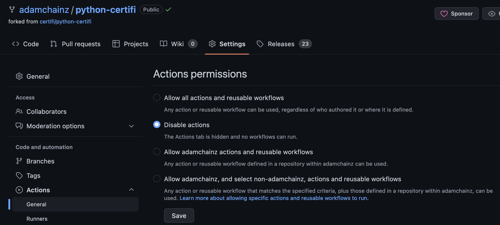
RT @QuantStack: More packages are available in emscripten-forge every day. We just landed scikit-learn, SciPy, scikit-image, hdf5. Many mor…
RT @emollick: In an increasingly remote-working world, going to an occasional research or industry conference can be important. This paper…
RT @marcan42: (Some others: using Linux-based virtualization solutions, and also using the M1/M2's vGIC for better VM IRQ performance, sinc…
RT @Linux_Mint: How to upgrade to Linux Mint 21
https://blog.linuxmint.com/?p=4378
RT @dmofengineering: New to tech:
Everything is a technical problem.
Tech Veteran:
Everything is a people problem.
Replying to @willmcgugan and @brettsky
Third ✋🏼
(What do people use instead of RSS??)
RT @PythonNamibia: Proud to announce that we will host a panel discussion on the Topic: “The role of Artificial Intelligence and Smart Tech…
¿Se puede aprender a programar por ósmosis? Escucha mi entrevista en We Decentralize Tech para encontrar la respuesta 🔥
https://open.spotify.com/episode/1vHXu1xIHbjAhOvjA5PLeo?si=25df7b1b66164977
Gracias @espejelomar por la invitación y por elegir una de mis canciones favoritas para la apertura 😍
TIL: "Contribute pages for @github repositories" 🤯 https://github.com/github/docs/contribute
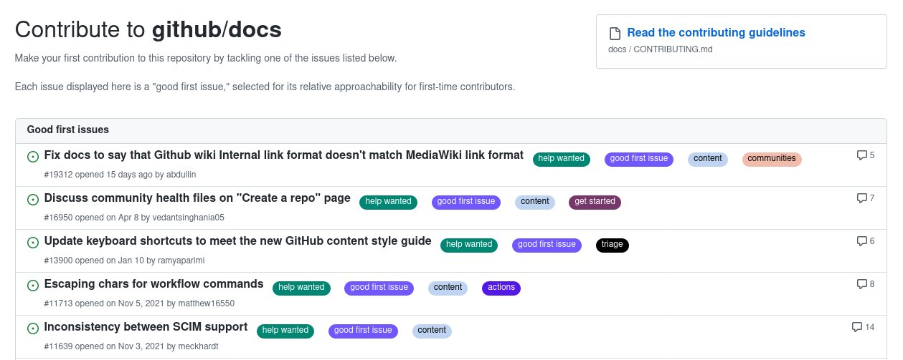
Replying to @OrtegaRedondo_m and @PyConES
¡Iremos muchos de @PyDataMadrid!
RT @luigifcruz: Python is fun. I optimized a script that used to take two hours to complete. It now takes 1 minute. This wouldn't be possib…
RT @RiddleMeCam: Been working on some visualizations in @matplotlib to highlight statistical concepts. This one intends to demonstrate (via…
setuptools 64.0.0 ships PEP 660 editable installations, which means that http://setup.py files are not needed anymore! 🎉
Congrats to the whole @ThePyPA and most especially to Anderson Bravalheri, who worked on this for months and gathered feedback from the community 👏🏼
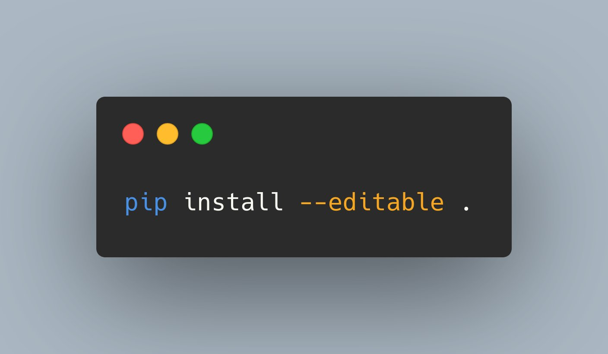
Replying to @juanluisback
Read more in the setuptools documentation: https://setuptools.pypa.io/en/latest/userguide/development_mode.html
Replying to @juanluisback
Clarification: http://setup.py files are not needed anymore*
*For simple, Python-only projects (the majority) to have all the standard features (PEP 621, PEP 660)
Replying to @PamphileRoy
I switched my projects to flit as well, but I'm happy to see that setuptools is alive and kicking 😁 after all, it's possibly the most widely used build backend!
Replying to @tomgordon and @ThePyPA
Good moment to deploy an internal PyPI proxy so you can control and audit new versions 😁
Google Analytics 4 ▶️ BigQuery ▶️ BigQuery view ▶️ @orchestofficial + @meltanodata ▶️ PostgreSQL ▶️ @metabase
Achievement unlocked 🔓 Blog post soon!
Replying to @ThePyPA
If this upgrade broke your builds 👇🏼 https://twitter.com/tomgordon/status/1557747707313172480
Replying to @erinmikail and @OrbitModel
This is so sad to hear, you and @rosiesherry have taught me so much about community building and were a strong reason why I'm using @OrbitModel. You won't have a problem finding your next adventure. Godspeed!
RT @pradyunsg: Alrighty, if you wanna delete those http://setup.py files but still use setuptools for some reason, you can do that…
RT @ghickman: This is such a big deal. Python packaging really is pretty good these days. The years of hard work from maintainers are fin…
Replying to @zoocat
Right?? We packaging nerds really have one of the weirdest hobbies ever 😅
Replying to @simonw
There are many setup.py-free templates, the simplest ones tend to use flit. See for instance https://github.com/astrojuanlu/cookiecutter-pylib/
Replying to @robsmallshire, @james_t_webber and @ThePyPA
With a setup.cfg it worked, but "the plan is to eventually deprecate setup.cfg" and keep only pyproject.toml. See https://stackoverflow.com/a/68939858/554319 for more context
Replying to @robsmallshire
https://twitter.com/juanluisback/status/1557799095275773952
Replying to @james_t_webber and @ThePyPA
Yes: https://twitter.com/juanluisback/status/1557799095275773952
Replying to @simonw
If you'd like to focus on setuptools, from today onwards it's no longer a special case 😊 Update [build-system], adjust [project].dynamic, remove [tool.flit.module], and all the rest should be the same (the beauty of PEP 621)
RT @anacondainc: We’re excited to share that @Numba_jit, the high performance #Python compiler, has surpassed 1,000 academic citations! 🥳🐍…
RT @ocefpaf: @juanluisback @ThePyPA We need to pressure GitHub to fix their dependency graph for Python projects now. Sadly they only parse…
Replying to @urcyanide
People have managed to package all sorts of non-Python dependencies for pip (node, cmake). And there's also conda :) so no changes in this area
RT @HenrySchreiner3: @pradyunsg @treyhunner @Jonny_Waffles Pdm-pep517 is. PDM itself can also use flit-core, hatchling, or even PEP 621 set…
Replying to @MoureDev
@MoureDev, ¿qué streamers recomiendas que divulguen sobre Python a un nivel un poco más avanzado en castellano? Cosas sobre datos, machine learning, o incluso desarrollo web. Si no conoces a nadie me sirve la respuesta también 😊 ¡Saludos!
Replying to @xoelipedes, @MoureDev and @DotCSV
¡Gracias @xoelipedes! ¿Pero creo que @DotCSV últimamente no streamea codeando no? Al menos es lo que veo en su YouTube (los últimos vídeos guardados en su Twitch son de hace 2 años)
Replying to @DistNaturalEcov
Yo soy esa persona pero me queda por ahorrar un poquito todavía 🙂 A ver si llego antes de que se reserven todas, me encanta lo que hacéis ♥️
RT @ChelseaParlett: Started translating my 📊plotnine data viz lectures into 📈seaborn (so students can see both).
💭and I have some thought…
Replying to @MarcSkovMadsen, @streamlit, @Panel_org and @plotlygraphs
This gist cannot be found anymore?
Replying to @ecanrog
Leyendo, gracias por compartir. Muy importante la discusión sobre neomalthusianismo y ecosurvivalismo.
Replying to @juanluisback
I've given several talks about Numba over the years. The last one: "Is it a bird? Is it a plane? Accelerating Python with Numba" at @pylondinium 2019, is available online https://youtu.be/Hip4AWsxO_g
Happy 10th birthday, @numba_jit! 🥳🥳🥳
I've been in love with Numba since the first day: you add a Python decorator to your array-oriented function, and it speeds it up dramatically. Try it out! https://numba.pydata.org/ https://twitter.com/teoliphant/status/235789560678858752
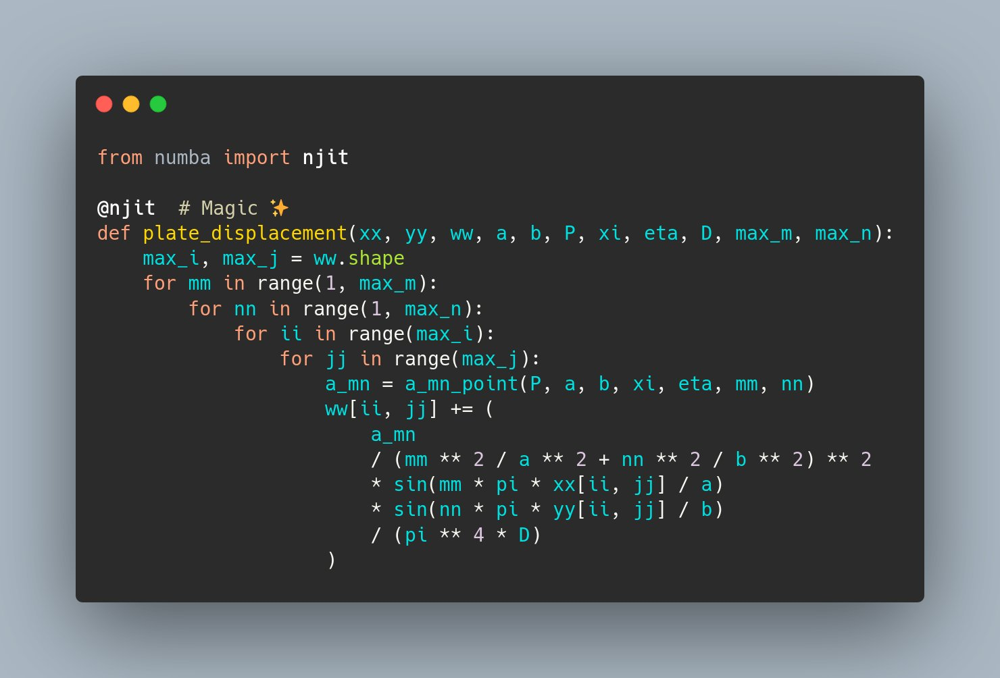
Replying to @juanluisback
Numba is enabling amazing work in very different areas of science and engineering. Instead of rewriting critical code/tight loops in a compiled language, it's easier to get started with Numba. It even targets GPUs!
For example, I always enjoy @murraydata geospatial tweets 🔥 https://twitter.com/MurrayData/status/1550112046825345028
Replying to @juanluisback
The numba community is very friendly and they have a very active Discourse group! If you have any questions, I highly recommend you to ask here https://numba.discourse.group/
Replying to @juanluisback
And of course, numba is one of the key success factors behind @poliastro_py, my Python library for interactive astrodynamics and orbital mechanics. I talked about it at #SciPy2022 😊 https://youtu.be/0GqdIRdDe9c
Replying to @juanluisback
Slides of my numba talk: https://nbviewer.org/format/slides/github/astrojuanlu/talk-numba/blob/master/Talk.ipynb
Slides of my poliastro talk: https://nbviewer.org/format/slides/github/astrojuanlu/scipy-us-2022-poliastro-talk/blob/main/Talk.ipynb
Follow me for more tips about the @PyData and SciPy ecosystems! https://twitter.com/juanluisback/status/1538818648596430849
I subscribed to a number of @metabase issue reports related to complex models, and I have to say I'm impressed that they're actually fixing and releasing them. Kudos! 👏🏼
Replying to @pythoncanarias
¡Sois *muy* grandes! 👏🏼👏🏼👏🏼
Replying to @ZachMandell1, @pdrmnvd, @meltanodata and @fivetran
I've been there last week https://github.com/MeltanoLabs/tap-google-analytics/issues/43#issuecomment-1209475779
What I'm doing now: using BigQuery as an intermediate step https://twitter.com/juanluisback/status/1557746552378048513
Replying to @pdrmnvd, @orchestofficial, @meltanodata and @metabase
what alternatives are there for the poor of us that can't/don't want to pay Fivetran? looking forward to reading your blog upcoming post 🙃
Replying to @kressaty
My main goal is augmenting/joining the data with other sources on our warehouse for better insights. I'm more proficient with SQL & @metabase than with GA, so I'm not aware of pros/cons of the GA4 report builder.
Replying to @kressaty, @metabase and @FirstpartyHQ
Basically because it's free and many products already have integrations with it (like @webflow, which we also use). Otherwise I'd probably pick @PlausibleHQ these days. First time I hear about @FirstpartyHQ, will check it out!
Replying to @tjmule and @metabase
Getting there, slowly. Those problems made me push more models to the database/dbt, which is not bad in itself. But I'm glad they're solving them anyway.
Replying to @kressaty
Feel free to reach out at `juanlu@{my_company_domain}` :)
Replying to @choldgraf, @GaelVaroquaux, @ProjectJupyter, @Spyder_IDE and @michaelwaskom
What would I _like_ to see next:
1. File edition in JLab on par with VS Code
2. The notebook UI remains, one jupytext format (MyST?) becomes default, ipynb is kept for an "Export Report" (see to https://twitter.com/xenophar/status/1559100687904038914)
3. Kernel management is simplified and I install JLab once
Replying to @maegul, @irfnali1 and @xenophar
All of this. A few days ago I rumbled in longer form about these struggles https://twitter.com/juanluisback/status/1552640166082347009
Replying to @ccordoba12, @ProjectJupyter and @Spyder_IDE
Hola @ccordoba12, sorry I missed this! I don't have direct experience with @Spyder_IDE but I will ask around. I encourage you to join our "Python Científico" Telegram group if you have the time https://t.me/python_cientifico
TIL: JSONPath 🤯 https://www.jsonquerytool.com/
RT @readthedocs: Sunday, we celebrated 6c38e6c0, the very first commit to Read the Docs! 🎂
From a humble hackathon start, 12 years and 193…
Thank you, User 10208784969362514109, for speaking truth to power.
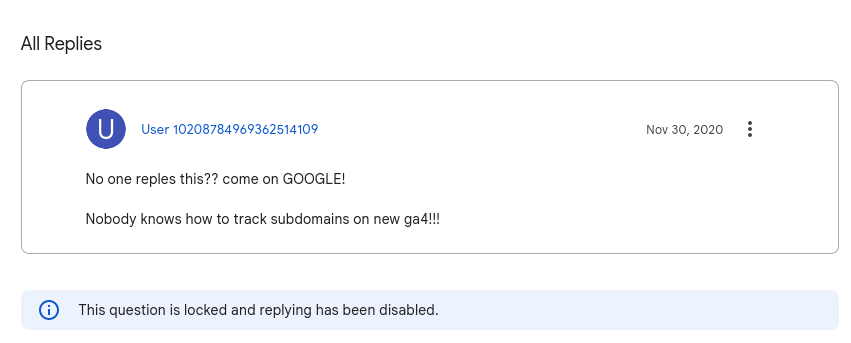
every time I interact with @Google products or their documentation I feel I don't belong to this industry and I should be herding sheep 🐑
Replying to @dennyperez18, @julian_duque, @ALAColombia, @hola_soy_milk, @GitHubCommunity and @githubenespanol
¡Me encantó! 👏🏼👏🏼
Replying to @zapata131, @remoquete and @Google
Mainly because of the tool. And also because of the lack of official response in the support channels https://twitter.com/juanluisback/status/1559652142734000128 I don't have actionable feedback for the docs, it does a reasonably good job given the amount of options there are.
This is how some users would install Python command-line tools, like black, on a fresh Linux machine. Can you spot what's wrong, or know the result without running the commands locally? #python
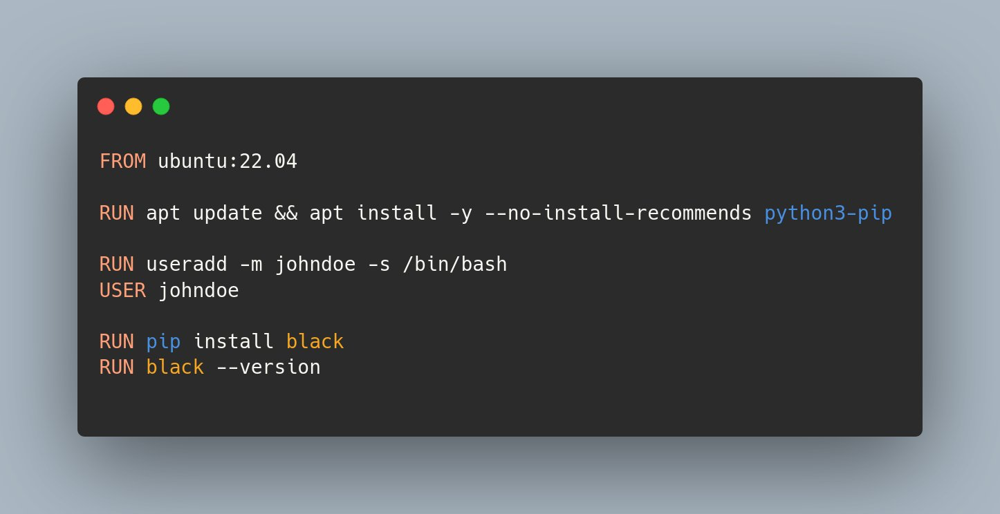
Replying to @DrRParker
I'm a (micro)mamba addict now, no more conda for me 😄
Replying to @gnufede
Replying to @JulianWasTaken
Completely agree with you. What I do these days on Ubuntu-like systems is
$ apt install python3-venv
$ python3 -m venv .venv
It doesn't even pull pip as a dependency:
$ python3 -m pip
/usr/bin/python3: No module named pip
$ source .venv/bin/activate && pip --version
pip 22.0.2
Replying to @JulianWasTaken
For managing different Python versions I use @codewithanthony deadsnakes PPA.
The problem with this method is that it's Ubuntu/Debian specific. But that's another story https://twitter.com/juanluisback/status/1538936104824492033
Replying to @melissawm and @choldgraf
This!
RT @python_es: Conocéis los meetups y comunidades de vuestras regiones? Aquí tenéis la lista actualizada con los que siguen activos:
PyData…
Replying to @python_es and @atareao
En su momento era bastante activa, necesita un empujón :) https://www.meetup.com/Python-Valencia-Meetup/
Replying to @sethmlarson and @urllib3
Subscribed!
Well, looks like my @meltanodata t-shirt has arrived! I'd need an @orchestofficial mug or hat to wear both at the same time 😎
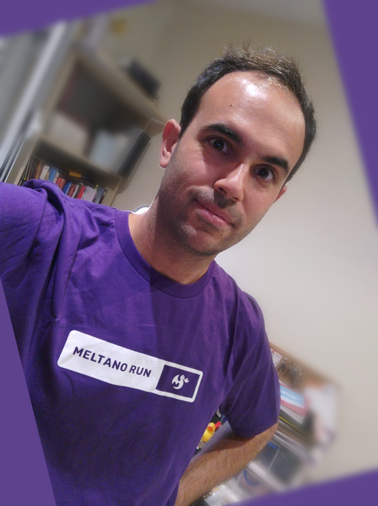
Replying to @reydelhumo
That was for demonstration purposes only
Replying to @reydelhumo and @gnufede
I don't think so - even if installing in the --user location, it would not be in the path (that's what pip falls back to here)
Replying to @DanWos
This pitch *perfectly summarizes* my problems with PDF extensions in Sphinx. I've been following @BouillonCourt work for long and I'm glad someone put it on a Sphinx extension, I think this has a huge potential with enough time and resources. People want static docs. @reydelhumo
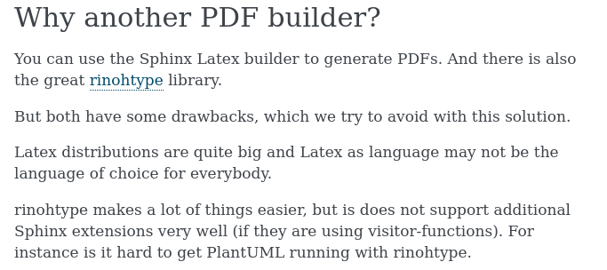
RT @DanWos: A new #sphinxdoc extension for PDF generation was born:
Sphinx-SimplePDF 📕
https://sphinx-simplepdf.readthedocs.io
Install it via pip and run…
Replying to @DanWos, @BouillonCourt and @reydelhumo
By the way @DanWos I promoted this on the @writethedocs Slack, I think many people will be eager to try it!
RT @braaannigan: If you're writing Polars code like this
for col in df.columns:
do stuff
then STOP!!!!
Instead, use expressions and…
RT @pypackages: The release of pyinstrument package 4.3.0 is now available. 🥳
Call stack profiler for Python. Shows you why your code is s…
RT @protontypes: Renewcast: Forecasting Renewable Electricity Generation in EU Countries. An outstanding example on how to make #climate re…
Replying to @minrk
This thread helped me a lot with that https://mobile.twitter.com/AdriSheares/status/1557885461154111490
RT @PyConES: ¡Acabamos de sacar la web de Django Girls Granada y los formularios!
https://djangogirls.org/en/granada/
This one took a while to write, but it's finally out! Give it a read and share it around, feedback welcome 😊 https://twitter.com/orchestofficial/status/1562101598792335362
Replying to @TdEscudella
Este 12 de Octubre repetís el menú anarquista de hace unos años? 😏 Nunca me olvidaré de esa "sopa roja y negra"!
Replying to @reydelhumo
"Around the World" una vez, y otra, y otra...
Replying to @juanluisback
This tweet was featured in @pythonbytes #297 🥰 https://twitter.com/pythonbytes/status/1559664550080679936
To the "semantic versioning won't save you" and "upper version pinnings are bad" folks, try installing a 2-year-old version of any Python package without such pinnings 😭
I understand where this comes from but the real world is very complex.
Replying to @juanluisback
Wish granted! 💌😍 @orchestofficial
Replying to @JulianWasTaken
Partial info is better than no info.
Case in point: a user is trying to install an old version of @poliastro_py, but everything breaks so they're manually downgrading Astropy, NumPy, numba, even IPython (!) to versions that were released around the same date. This is insanity.
Replying to @JulianWasTaken and @poliastro_py
Would a requirements.txt file have helped here? Yeah, at least as a scape hatch. Although the default user experience, which is `pip install "poliastro<0.15"`, would still be bad.
Upper version pinnings at least _try_ to avoid this.
Replying to @pleiszenburg, @JulianWasTaken, @poliastro_py and @pypi
I tried hacking something using the @pypi API but... I got completely lost https://github.com/pypi/warehouse/discussions/12131
Replying to @ericholscher, @pleiszenburg, @JulianWasTaken, @poliastro_py and @pypi
Thanks a lot for the pointer! It looks like pypi-timemachine is using an API that has been just deprecated. Left a comment here https://github.com/pypi/warehouse/discussions/12131#discussioncomment-3475214
RT @EU_opendata: How is the use of #LinkedOpenData useful?
#OpenData #Visuals
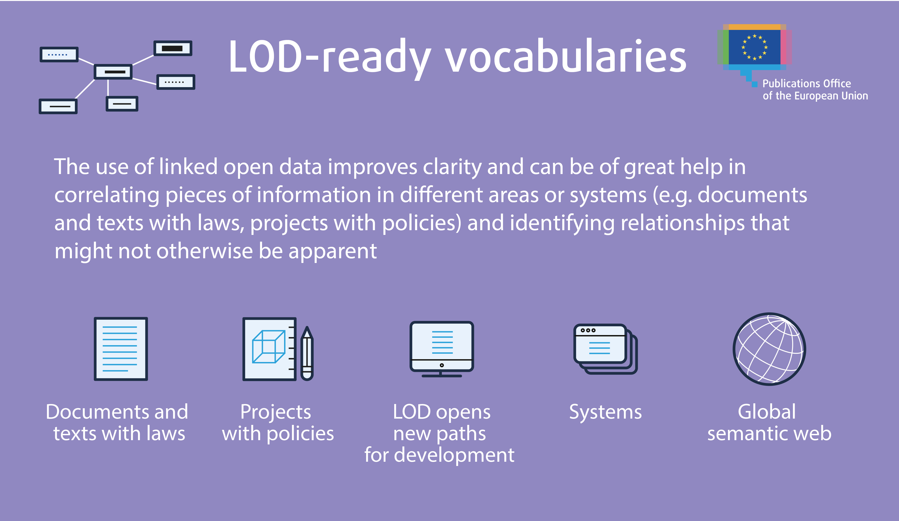
Replying to @juanluisback
For future readers: I solved the problem using https://github.com/astrofrog/pypi-timemachine !
https://mobile.twitter.com/AstroBrigi/status/1562825625018454017
"Starting November 28, 2022, we plan to stop offering free product plans and plan to start shutting down free dynos and data services"
RIP Heroku 🪦 https://twitter.com/heroku/status/1562817050565054469
Replying to @juanluisback
Migrating all my stuff to @railway Affiliate link: https://railway.app/?referralCode=VO2J82
RT @reneeshah123: 🧵Here are some quick observations on what I’m seeing within distributed systems in 2022 -- largely focused on edge comput…
Made my first experiment with generative models, using #StableDiffusion and @marktenenholtz script from https://mobile.twitter.com/marktenenholtz/status/1562047032172326912 because I have no idea what I'm doing 🙃
Tried generating a Python on a white lab coat - not very successful, but happy that I got it running!
No. https://twitter.com/GoogleDevEurope/status/1563194559680888833
Replying to @_CaseyHartnett
And yet the company that makes 1 MUSD in revenue per employee and only hires PhDs from Standford does not seem to understand
Replying to @PamphileRoy, @pypelson, @HEPfeickert and @HenrySchreiner3
Yeah, apparently something like this already exists! Solved my problem with pypi-timemachine https://mobile.twitter.com/juanluisback/status/1562835254716403712
RT @pythonanywhere: Our Commitment to Providing Free Accounts: https://blog.pythonanywhere.com/206/
Replying to @HenrySchreiner3
Hah, I tweeted this out of despair but 3 days later I'm suffering some upper pins from an outdated library that shouldn't be there. Karma, I guess 😂 thanks for chiming in @HenrySchreiner3 !
Replying to @victorianoi
Atenas, obligatorio ir al barrio de Plaka, por la noche hay musiquita y tiene mucho encanto. También por Psyri hay muy buen ambiente, tocan música tradicional tipo Mitropanos (a los locales meh pero a mí me encanta). Y por las mañanas hay mercadillo
Replying to @victorianoi
Ah y la biblioteca de Stavros Niarchos es *impresionante*, altamente recomendable.
En Santorini, por el sureste de la isla hay algunas rutas para hacer, útil si quieres huir de los turistas
RT @emollick: Teaching kids to code improves their ability to program in college, but what language should they learn?
There has been a pu…
Replying to @bernhardsson
At @readthedocs they're big Celery users @reydelhumo
RT @scikit_learn: @EuroSciPy is happening! Nice to see on-site conferences and community events taking place again in Europe.
#euroscipy
Replying to @andrestaltz
TTOSA is a fine metric because it's easy to measure. But what about Time To *Viable* Open Source Alternative?
I doubt MATLAB users can migrate any non-trivial work over to Scilab or even GNU Octave, 32 years after release. Same with Photoshop (sorry GNU I.M.P.).
Replying to @andrestaltz
There's a clear trend here: when the audience is developers, TTVOSA is amazingly short.
When the audience is the general public, on the other hand, many critical applications still don't have *viable* alternatives.
The problem is that many "enthusiasts" don't agree.
Replying to @andrestaltz
Anyway, you talk about exactly that in the blog post :)
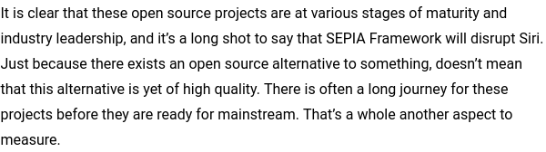
Replying to @andrestaltz
Yes, but I did so _after_ tweeting this, sorry about that https://twitter.com/juanluisback/status/1564194398371454976
After many months of using MyST, I can finally announce that I have forgotten again how to write hyperlinks in reST
Replying to @_dylancastillo, @pwang and @b_smoke
Amazing!! This inspired me to migrate MySTyc, a reST-to-MyST conversor I made for @ExecutableBooks, to @pyscript_dev - however, I found some packaging issues along the way:
https://github.com/pyscript/pyscript/issues/736
I hope I can find a solution soon! 🤞🏼
Replying to @b_smoke, @_dylancastillo, @pwang, @ExecutableBooks and @pyscript_dev
Solved with the help of @b_smoke 🎉
PYSCRIPT IS MAGIC
Replying to @b_smoke, @_dylancastillo, @pwang, @ExecutableBooks and @pyscript_dev
Current status https://twitter.com/juanluisback/status/1564331878479446016
It only took 3 hours (2 of them were fighting with some old packaging bugs until I was told how to use the cutting-edge versions) to migrate a Python-based app to @pyscript_dev. No server (RIP Heroku 🪦), no `fetch().then()` - everything happens on the client 🤯
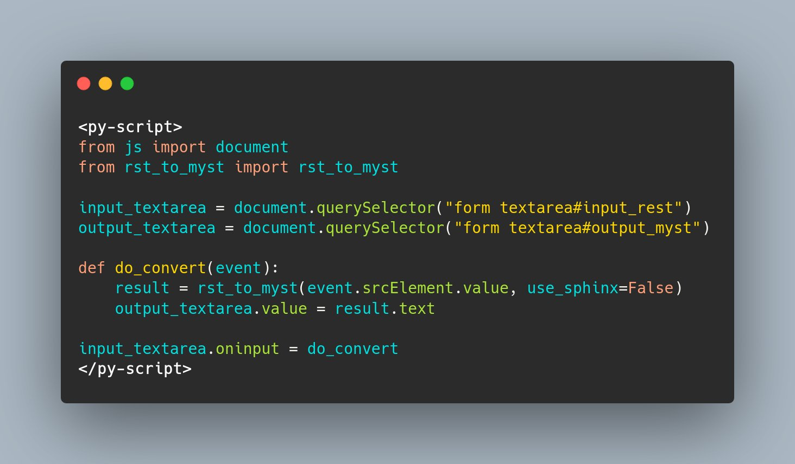
Replying to @juanluisback
Still ironing out some details of the pull request, but suffice to say that I removed 144 lines and added 46 https://github.com/astrojuanlu/mystyc/pull/2/
Hope to have it up and running soon!
Replying to @juanluisback
Here is where it all started: https://twitter.com/juanluisback/status/1564312184158560258 thanks @b_smoke for the lightning-fast support!
Replying to @juanluisback
tl;dr: https://twitter.com/juanluisback/status/1564331878479446016
RT @ThorstenBeier: @juanluisback No..pyodide is the magic
Replying to @JeffersGlass, @pyscript_dev and @antocuni
Thanks for the heads up! Yes, this definitely looks like the problems I'm observing.
pip install nodeenv
nodeenv -p
;)
Replying to @luixer_
Algunos tenemos que acelerar para que muchos puedan frenar... ¿o hay otra manera?
En todo caso, coincido en lo fundamental: pocas personas haciendo hiperactivismo no es sostenible, aunque produzca el espejismo de un cambio en el corto plazo.
RT @choldgraf: 🎉New Release!🎉 PyData Sphinx Theme v0.10
The PyData Sphinx Theme is a clean and customizable three-column theme for and by…
RT @dennyperez18: 📢¡Hola!
Se viene la 9na Conferencia Latinoamericana de #Python Científico.🐍🥳
Comparte experiencias sobre el uso de Pytho…
Replying to @EMostaque
You can, and must, do better. At the very least, if you are going to criticize "most of the AI ethics debate", write a nuanced argument.
Even if this is Twitter, you have lots of visibility now. We need fewer techbro takes, not more.
Replying to @bernhardsson
Source? Would love to read the rest of the text
RT @ethicaladsio: We did a ProductHunt release to celebrate going v1.0 with our new ML-powered contextual targeting that targets based on p…
Replying to @johnthackara
Source: https://www.citi.com/ventures/perspectives/opinion/climate-fintech.html
RT @EuroSciPy: Yay EuroSciPy opening session, so good to be back in person 🚀🤗
RT @hendorf: There are many ways to contribute to OpenSource, many of them are non-tech 🫠 awesome Talk by @noatamir at @EuroSciPy https://…